Comparisons
Do two replicates agree? Does a rescoring reproduce the published scores? Does another assay of the protein, or a predictor, say the same? Compare puts two sets of scores side by side. Before any number, it says whether the two can be compared, and what their agreement can mean.
Two sets of scores, side by side
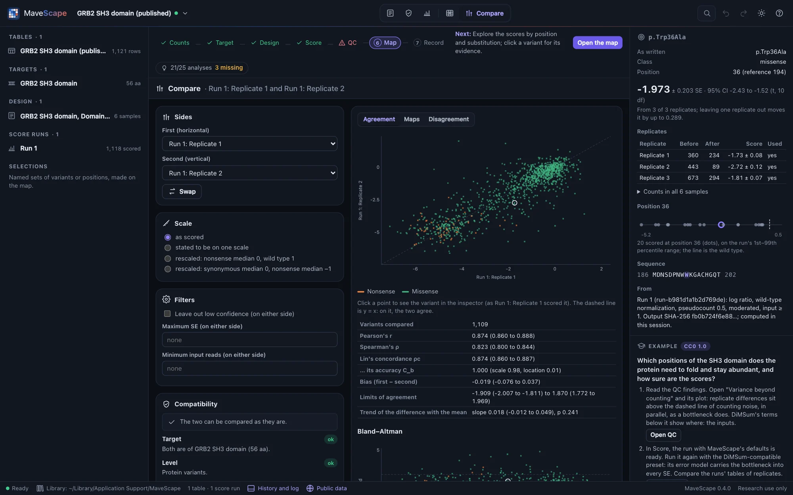
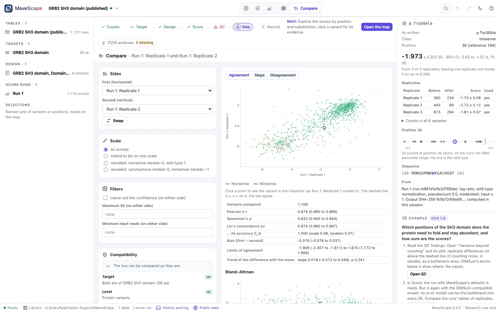
The Compare view (after Map in the view switcher) shows two sets of scores: each a run's condition (its combined scores) or one of its replicates, of one run or two, or a MaveDB score set or a predictor kept beside the workspace (below). Pick them under Sides; Swap exchanges them. MaveScape starts with the comparison a workspace most likely asks for: a run scored from a MaveDB record's counts against the record's published scores; otherwise the latest run's first two replicates, or its two conditions, or the last two runs.
The tabs show the comparison: Agreement (a scatter plot and its statistics), Maps (the two maps and their difference), Disagreement (the variants and the positions that differ) and, against a predictor, Classes. In the scatter plot the first side is drawn across, the second up, one point per variant compared, colored by class. Click a point to see the variant in the inspector, as a run scored it; the ring follows it.
The compatibility report
The report comes before the statistics. Each item is ok, qualified (the statistics hold, read as the item says), or blocked (no statistics, and why):
- Target. Variants are matched by name on the same target sequence. Two targets that are different stretches of one UniProt entry, each with its accession and offset (set in Experiment, or by checking the target against UniProt), are matched on the entry's coordinates: their single substitutions, by position in the entry. Two targets with no common reference are not compared, and the report says what to give.
- Level. Nucleotide variants of one target are matched as written; against a protein-level side, a nucleotide run is read at the protein level, its variants making one protein change merged as on the map.
- Variants. How many are scored on both sides, and how many on one side only (absent from the other's variants, or there but not scored). The wild type, the reference of both, is left out. Fewer than 10 in common are not compared.
- Direction. What a higher score means, from each design's readout. When one side says higher means more of the function and the other less, the second is compared negated, so that agreement reads as agreement. A direction not stated is taken as more of the function, and the report says so.
- Assays. Two different assays (two readouts or methods) can disagree for reasons of biology, not only of measurement.
- Scale. Two sides are on one scale when they are of one run, or when the same model, normalization, time scale and rescaling made them. Published scores are on their record's own scale, which MaveScape does not know. On different or unknown scales, the correlations are given, and Lin's concordance and Bland–Altman, which measure agreement on one scale, are withheld: two assays on different scales are not read as disagreeing. Under Scale, two such sides can be put on one (below). A predictor is compared by rank and by its classes.
- Independence. Two replicates that share a sample (an input library selected twice) carry its counting error in both, so they agree more than independent measurements would. A replicate against the condition it is combined into agrees in part because one contains the other. One table scored twice, or a record's published scores against its own counts scored again (a MaveDB score set kept beside the workspace included), measures the difference between two analyses, not the experiment's reproducibility. A predictor's errors are independent of the measurements', unless it was trained on them.
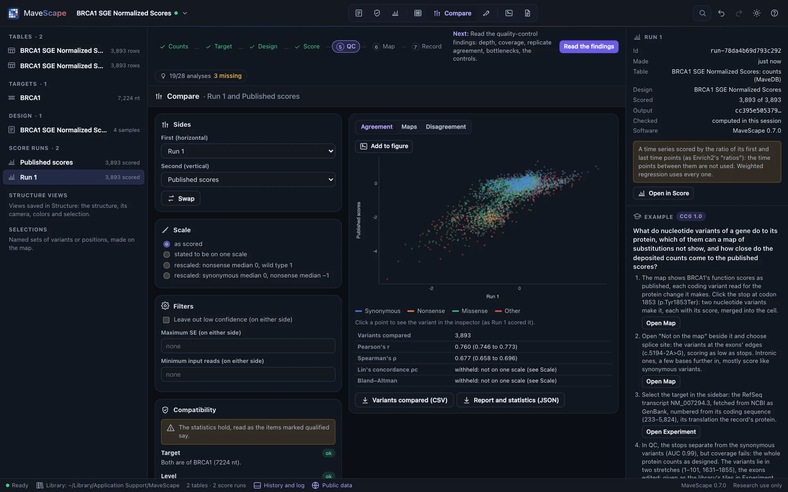
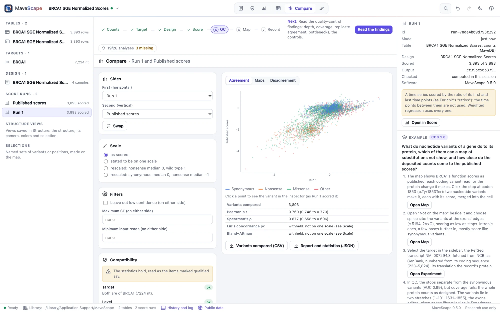
Other sources
Under Other sources, add what to compare a run with, kept beside the workspace rather than opened as one:
- A MaveDB score set, by its URN: another assay of the same protein, or the published scores of the counts a run scored. MaveScape fetches its record and its published scores (through the program's fetcher; only the URN is sent), keeps them with the workspace and its archive, and reads the scores as published, as opening the record would. Its target is the record's (fetched when a transcript names it): matched with the run's on the same sequence, or on UniProt's numbering when both give the entry and their offsets. MaveDB records no direction, so say what a higher score means when adding it, or under Sides. The score set's scores are also a track beside the map.
- A predictor: AlphaMissense for a human protein (from AlphaFold DB, by the target's UniProt accession), or a predictor's own file (EVE, ESM1b's matrix, or any table of protein variants and scores; Map view, Tracks, takes them too). Its substitutions are placed on the run's protein as its track is. AlphaMissense's and EVE's scores rise as a substitution is more likely pathogenic, so they are compared negated; ESM1b's log-likelihood ratio falls; another table's direction is not known, and the report says so.
A score set or predictor is removed in Map view, Tracks (Undo brings it back).
A score set that writes one protein variant on several rows with different scores (several codons, or several measurements, with no nucleotide names to tell them apart, as Kotler et al.'s TP53 record does) is read as published scores are read: each protein variant as one, its rows merged as DiMSum merges a protein variant's codons (weighted by 1/SE², or averaged without SEs). Frameshifts, which MAVE-HGVS names alike at a codon though they make different proteins, are left out. The report's Variants says how many were merged (FORMATS.md).
Scale
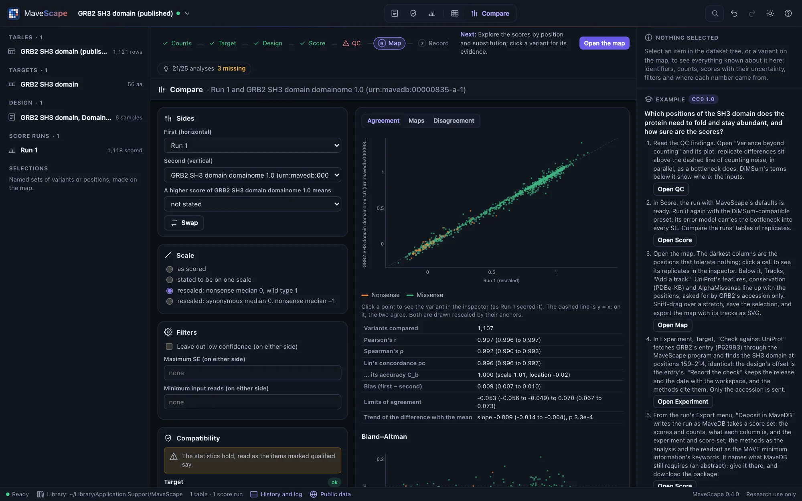
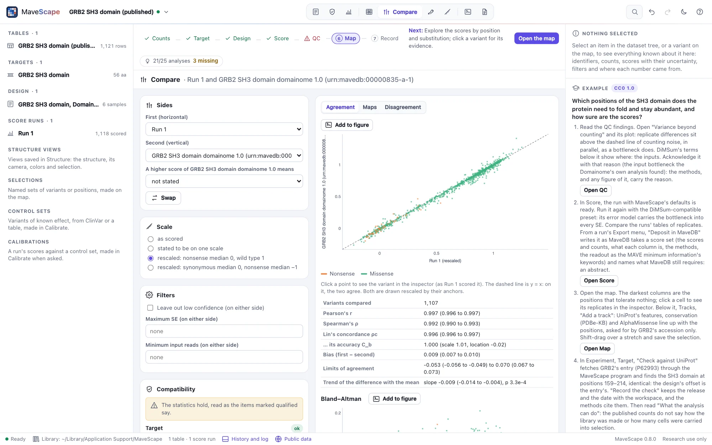
Two sets of scores are compared as scored unless Scale says otherwise:
- Stated to be on one scale. For two sets that are on one scale though their records do not say so: two score sets of one study and one pipeline (DHFR's without and with Lon). MaveScape does not check it; the report says it was stated, and every statistic is given.
- Rescaled by their anchors. Each side's scores are rescaled by its own anchors, as a run's rescaling does: its nonsense median to 0 and its wild type to 1, or its synonymous median to 0 and its nonsense median to −1. The anchors come from each side's own scored variants, and the report names them (each median with how many variants it is of). Rescaling assumes the anchors mean the same in both: a nonsense variant the complete loss of what each assay measures, the wild type (or a synonymous variant) all of it. Two sides whose directions are opposite are aligned by their anchors, not negated. A side without its anchors scored is not rescaled, and the report says which is missing.
The anchors are measured too: the wild type's score has its SE, and a median of n controls is uncertain by about √(π/2 × their mean squared SE / n). Rescaled, every score of a side moves with its anchors, by its place between them, so each difference's test carries both sides' anchors' share of its uncertainty, and a position's test their shared share. In simulated pairs of two assays that differ only in scale, with nothing planted, about 4% of pairs have any variant called discordant; leaving the anchors' uncertainty out, 10% to 55% do, the less certain the anchors the more. The anchors, the rescaled scores, the statistics and the tests are checked against R.
Read the anchors before the numbers. GRB2's Run 1 (DiMSum's fitness) and its record's published scores (rescaled by their authors) correlate at r 0.997 on two scales; rescaled by their anchors, Lin's concordance is 0.996 and the bias 0.009. PTEN's lipid phosphatase record writes its wild type as 1 with an SE of 0, though its methods put wild type-like variants from −1.11 to 0.89: rescaled by that row, its activity sits low.
Two screens that only seem to disagree
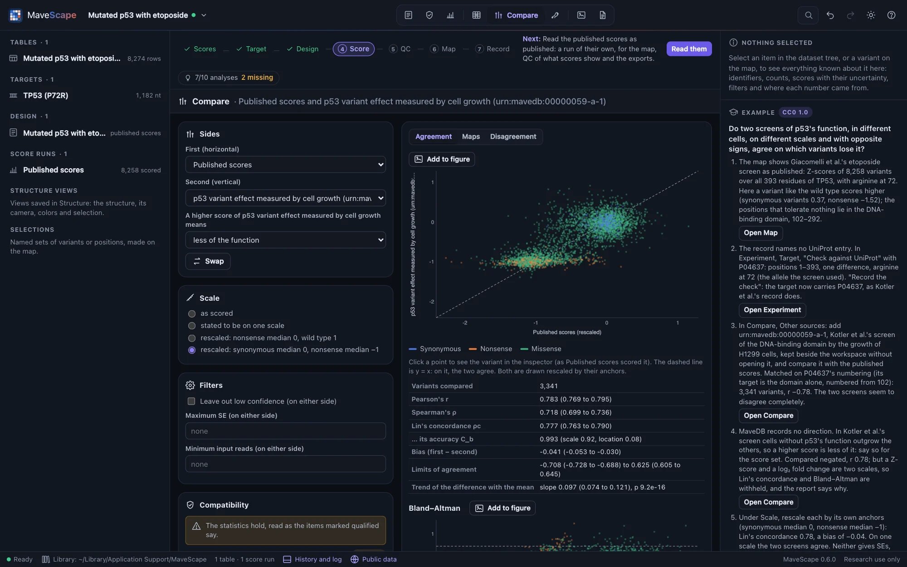
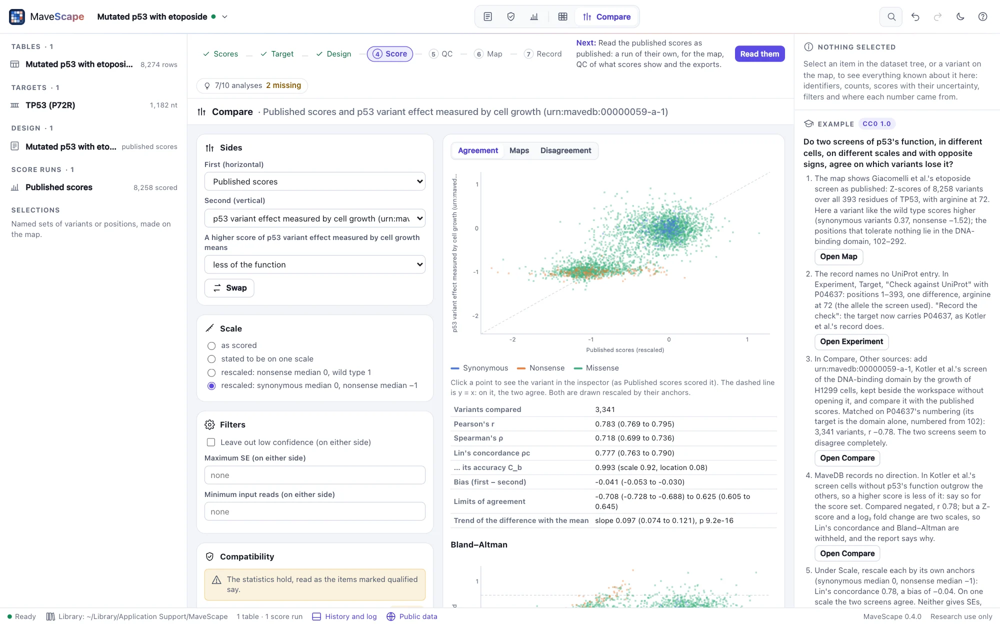
The TP53 example compares two laboratories' screens of p53's function: Giacomelli et al.'s, Z-scores of growth under etoposide in which a variant like the wild type scores higher, and Kotler et al.'s, log₂ fold changes of H1299 cells' growth in which it scores lower. Matched on UniProt P04637's numbering, their 3,341 variants in common correlate at r −0.78: as published they seem to disagree completely. Stating Kotler et al.'s direction gives r 0.78, but a Z-score and a log₂ fold change are two scales, and Lin's concordance and Bland–Altman are withheld. Rescaled each by its own synonymous and nonsense medians, Lin's concordance is 0.78 and the bias −0.04: they agree.
A rescoring against the published scores
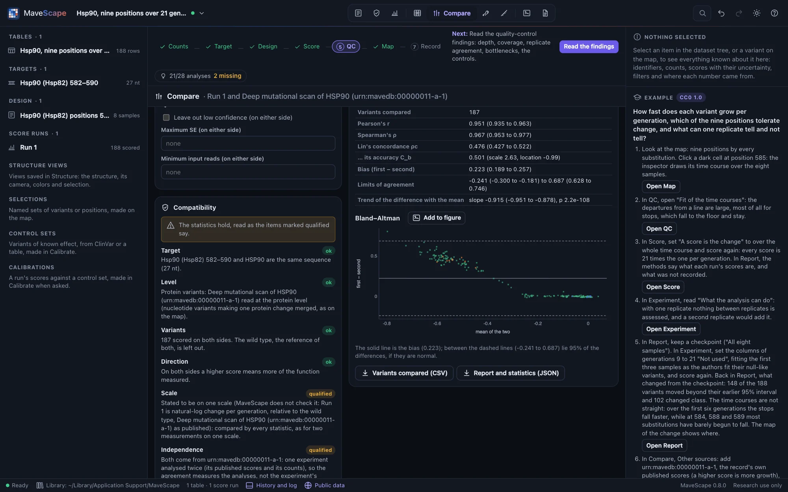
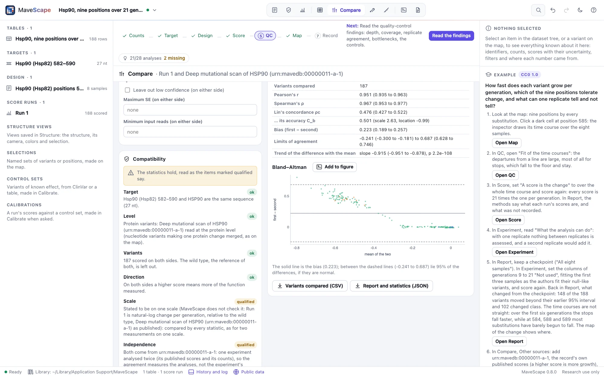
Correlation is not agreement. The Hsp90 example's Run 1 and its record's own published scores (kept beside) correlate at r 0.95, and both are natural-log change per generation. Stated to be on one scale, Lin's concordance is only 0.48 and the bias 0.22, and the Bland–Altman plot shows why: the difference grows with the effect (slope −0.91), most at positions 585–587, which tolerate nothing. The authors fit null-like variants on their first three time points, before they reach the floor; Run 1 fits all eight. How deleterious those variants are depends on that choice. The report says the two are one experiment analysed twice, so their agreement measures the analyses, and no difference is tested.
Filters
Under Filters, leave out the variants of low confidence on either side (a score resting on a pseudocount, or fitted on fewer replicates or time points than the design has), those whose SE on either side is above a maximum, or those with fewer input reads than a minimum on either side (a condition's: the mean over its replicates). The report says how many each filter left out. A side with no SEs or no counts, as published scores may be, is not filtered on them, and the report says that the filter applies to the other side only. A variant of few reads is mostly noise: DHFR's two conditions agree at r 0.52 over every variant both score, and at 0.77 with low confidence left out.
The agreement
Each statistic is given with its 95% interval:
- Pearson's r, how near the points lie to a straight line, with its interval from Fisher's z.
- Spearman's ρ, the same for their ranks, with the interval of Bonett and Wright (2000).
- Lin's concordance correlation ρc (Lin 1989), how near the points lie to the line y = x: Pearson's r (precision) times the accuracy Cb, which falls as the two differ in scale (the scale shift, the ratio of their SDs) or in location (the location shift). Its interval is Lin's (2000) on the z scale.
- Bland–Altman (1986): the differences (first − second), their mean (the bias) and the limits of agreement, the bias ± 1.96 SDs, between which 95% of the differences lie when they are normal; each with its interval. The trend of the differences with the means says whether the two differ in scale, not only by a bias: a slope beyond 0. The Bland–Altman plot shows each variant's difference against its mean, the bias and the limits.
The statistics equal R's to 13 significant digits (cor.test, DescTools' CCC, BlandAltmanLeh, lm) on seven pairs, among them DHFR's published scores without and with the Lon protease. In simulated pairs of known agreement, from 30 to 1,000 variants, the intervals hold the truth 94–96% of the time. Two are weaker, and the validation reports them as they are: near r = 1, Spearman's interval holds the truth less often (86% with 30 variants, 92% with 200), its ρ biased below the truth there; and with 30 variants on two scales, Lin's holds it 92% of the time.
Read the report with the numbers. Replicates that share their input agree for a reason the experiment does not care about. A rescoring that correlates with the published scores at r 0.76 (BRCA1's saturation genome editing) may differ only in what the authors did to their scores (each exon normalized apart), which the counts do not record.
The maps
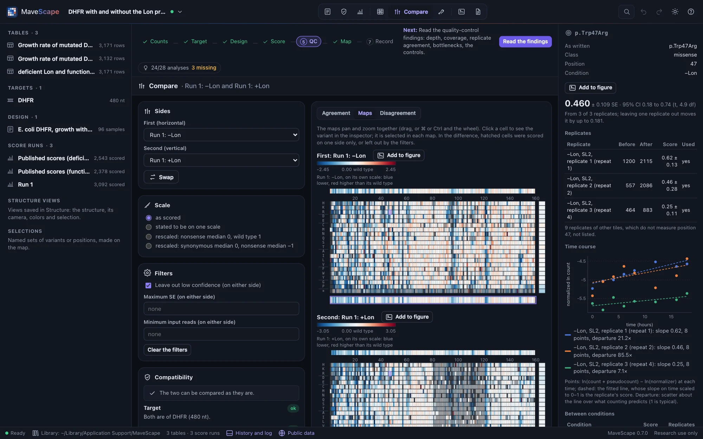
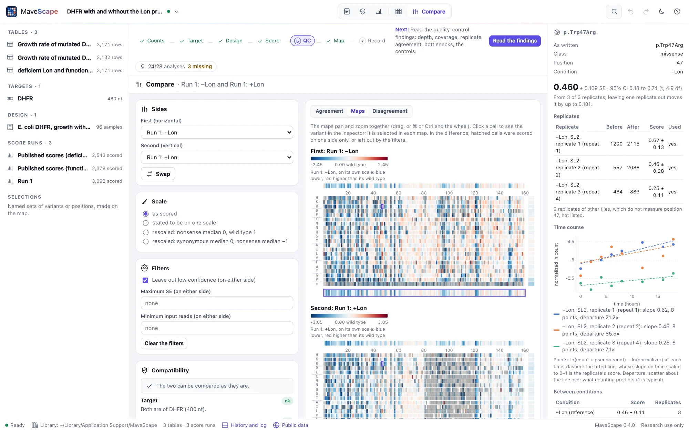
Maps shows the first side's map, the second's, and the map of their difference (first − second), one above the other. They pan and zoom as one: drag, scroll sideways, or zoom with ⌘ or Ctrl and the wheel in any of them, and the others follow. Two stretches of one protein line up on the entry's coordinates. Click a cell to see the variant in the inspector; it is selected in each map. Each side's map is on its own scale, centered on its wild type. The difference is centered on no difference; its hatched cells were scored on one side only, or left out by the filters. Only two sides on one scale have a difference map. Each map exports as SVG.
Disagreement
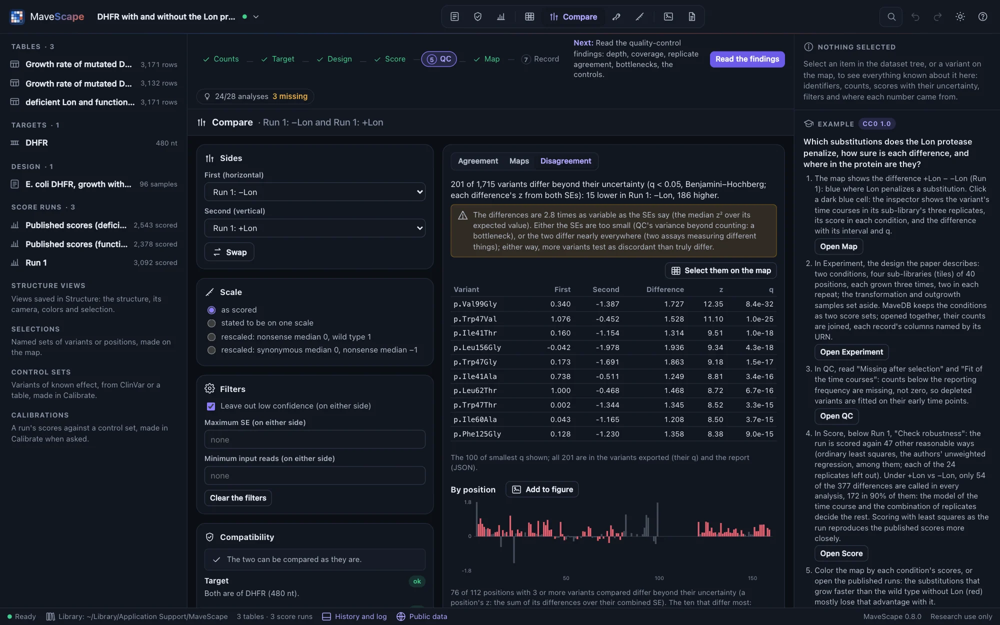
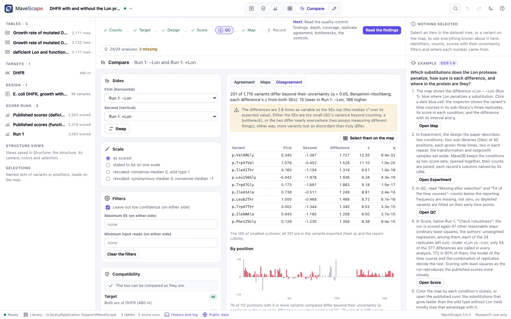
For two independent sides on one scale, each difference is tested against its uncertainty: its z is the difference over the square root of the sum of the two SEs squared, its p two-sided, and its q by Benjamini and Hochberg over the variants tested. A variant is discordant when its q is below 0.05. Replicates that share a sample, or one table scored twice, are not tested: the SE of a difference from both SEs assumes independent errors.
The dispersion says whether the SEs describe how far the two differ: the median z² over its expected value, about 1 when they do. Above 1.5 the view warns that either the SEs are too small, or the two differ nearly everywhere; either way, more variants test as discordant than truly differ. GRB2's replicates differ 8 times as much as their counting SEs say, which is the input bottleneck QC finds as variance beyond counting.
By position: the mean difference of the variants compared at each position, as bars along the target. Each position with 3 or more variants compared is tested too, its z the sum of its differences over their combined SE, with q over the positions. The ten that differ most are listed, with how many of their variants are discordant: a position can differ because one of its variants does. Click a bar to see one of its variants in the inspector.
The tests are checked against R (pnorm, p.adjust). In simulated pairs with planted differences they find 96% of the variants planted, while about 4% of the variants they call differ by chance, within the 5% Benjamini and Hochberg allow. They also find 57 of 60 planted positions. With nothing planted they call none, and the dispersion is about 1.
A predictor by its classes
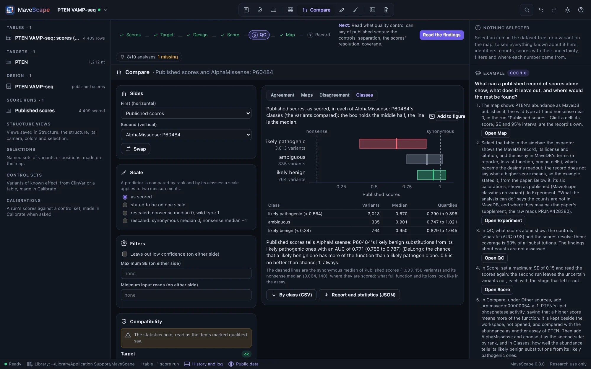
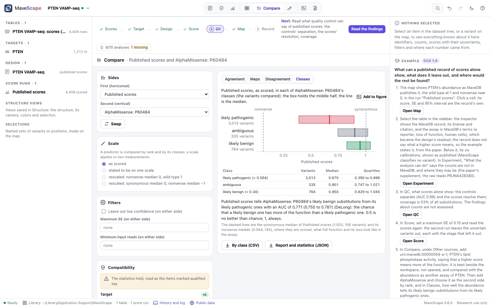
A predictor is compared by rank (Spearman's ρ; Pearson's r, Lin's concordance, Bland–Altman and the tests of disagreement are withheld) and, when it classes its substitutions (AlphaMissense's likely pathogenic, ambiguous and likely benign; EVE's), by its classes. Classes shows the measured side's scores, as scored, of the variants compared in each class: the middle half as a box, the median as a line, with the measured side's synonymous and nonsense medians (of every variant it scores) as dashed lines, what full function and its loss look like in the assay. The AUC says how well the scores tell the predictor's tolerated substitutions from its damaging ones: the chance that a likely benign one has more of the function than a likely pathogenic one (0.5 no better than chance, 1 always), with DeLong's 95% interval. The AUC and its interval equal R's pROC; in simulated classes of known AUC the interval holds the truth 94–95% of the time.
GRB2's abundance tells AlphaMissense's classes apart with an AUC of 0.78; PTEN's abundance with 0.77, and its phosphatase activity with 0.70. A predictor is not a measurement: where they disagree, the measurement says what happened in the assay, and the predictor what is expected of the protein.
The files
Variants compared (CSV) writes one row per variant compared: the variant (on the entry's coordinates when matched there), as each side names it, its class, each side's score and SE as scored, each score as compared (rescaled, or negated), the difference and mean as compared, and the difference's z, p and q where they were tested. Report and statistics (JSON) writes the two sides (a run's id and output hash; a score set's or predictor's URN and file hash), how they were matched, scaled (the anchors) and filtered, the report, the counts, every statistic, the discordant variants, the disagreement by position and a predictor's classes, with what was withheld and why. Positions (CSV) writes the disagreement by position, By class (CSV) a predictor's classes, and each map exports as SVG. FORMATS.md describes each. A comparison is a view: the workspace keeps the runs, each with its record, and the comparison is made again from them.
From a script
Remote control's compare takes the two sides by name ("Run 1: Replicate 1", "Published scores", "Run 1: +Lon", "AlphaMissense: P62993") or a MaveDB score set's URN (fetched and kept when it is not yet), the scale (scale: scored, stated, nonsense-wt or synonymous-nonsense), what a higher score of a score set means (direction), the filters (low_confidence, max_se, min_reads) and the tab to show (show); it shows the Compare view and returns the report, the statistics, the discordant variants, the disagreement by position and a predictor's classes. export with what: "comparison" writes the variants compared, or, to a path ending in .json, the report and statistics; comparison-positions writes the disagreement by position, comparison-classes a predictor's classes, and comparison-map a map (map: first, second or difference). add_track with provider: "mavedb-scores" and a urn keeps a score set beside the workspace (Remote control).